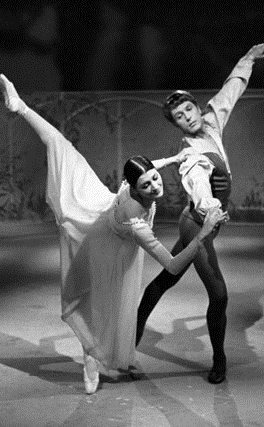

5.6 – SCENEKUNST
sidde 164
Scenekunsten omfatter en række forskellige genrer: skuespil, ballet, opera, musical og revy. Fælles for scenekunstens forskellige genrer er, at de opføres her og nu foran et publikum. Og som det er tilfældet med andre kunstarter, er også den danske scenekunst inspireret af udlandet.
I 1700-tallet blev dansk-norske Ludvig Holberg (1684-1754) opfordret til at skrive komedier til teateret. Han blev så grebet af arbejdet, at han på få år forfattede 25 komedier, hvor der bliver gjort grin med borgere, bønder og adelsfolk. Ofte er det en klog tjenestepige, der udtænker en intrige mod komediens ufornuftige personer.
En af de mest opførte komedier er Erasmus Montanus (1723), hvor studenten Rasmus rejser fra København hjem til sine gamle forældre og sin ventende forlovede og praler af sin latinske lærdom. Holberg var den første, der skrev komedier på dansk, og komedierne spilles stadig ofte på danske scener.
I begyndelsen af 1800-tallet fornys scenekunsten. Romantikkens digtere brugte dramatikken til at udtrykke store lidenskaber og følelser. De fandt motiver i histo rien, i folkeeventyr og folkeviser. Eksotisk og eventyrligt stof var også vigtigt, og den ledende nationalromantiske digter, Adam Oehlenschläger, lod sig inspirere af de arabiske fortællinger i 1001 Nats Eventyr, da han i 1805 skrev eventyr spillet Aladdin eller Den Forunderlige Lampe om den unge dreng Aladdin, der får fat i en gammel lampe, der viser sig at kunne opfylde alle hans ønsker. Stykket foregår i mellemøstlige omgivelser, men er også en beskrivelse af personer og typer i datidens København.
Det var eftertragtet blandt forfattere at skrive for teateret. Dramatikken blev anset for at være den fornemste kunstart. Det Kongelige Teater blev en vigtig kulturinstitution. Johan Ludvig Heiberg (1791-1860) var sammen med sin hustru Johanne Luise Heiberg (1812-90) fremtrædende her. Han blev direktør og forfatter for scenen, mens hun var en beundret skuespillerinde. De gjorde sig ikke mindst bemærket inden for den fransk inspirerede genre vaudeville, hvor dramatik og musik forenes i lystspil, ofte om kærlighedsforvik linger blandt borgerskabets unge.
Læremateriale Til Indfødsretsprøven
sidde 165
Det Kongelige Teater (Gamle Scene) i København. Foto: Tue Schou Pedersen.
Det Kongelige Teater (Gamle Scene) i København. Foto: Tue Schou Pedersen.
På Oehlenschläger og Heibergs tid blev balletten en førende del af scenekunsten. Koreografen August Bournonvilles (1805-79) udgave af en italiensk ballet, Sylfiden, blev opført første gang på Det Kongelige Teater i 1836. Hans koreografi er den eneste, som har overlevet. Dermed er Sylfiden en af verdens ældste overleverede balletter. Sylfiden har en romantisk handling om en ung skotsk mand, James, der på sin bryllupsdag løber bort med en sylfide, det vil sige en usynlig kvinde af luft. Bournonville har internationalt haft enorm betydning for balletten som kunstart. Hans tradi tion blev videreført og fornyet i det 20. århundrede. Baletten af sylfiden af August Bournonville.
Baletten af sylfiden af August Bournonville.
Læremateriale Til Indfødsretsprøven

sidde 166
Savage Rose.
Savage Rose.
Flemming Flindt (1936-2009) har også været med til at give dansk ballet stor anseelse i udlandet. Sammen med rockmusikerne i Savage Rose skabte han for eksempel balletten Dødens triumf (1971). Balletten begejstrede med sin stærke kritik af et samfund på vej mod undergangen, og den forargede også, da flere dansere optrådte nøgne.
I januar 1939, otte måneder før 2. Verdenskrig startede, havde Kjeld Abells (1901-61) skuespil Anna Sophie Hedvig premiere på Det Kongelige Teater. Skue spillet handler om lærerinden Anna Sophie Hedvig, der under et besøg hos sin familie i København fortæller, at hun har slået den grusomme og tyranniske skolebestyrerinde fru Møller ihjel. Anna Sophie Hedvig er et politisk skuespil, hvor Kjeld Abell indirekte opfordrer til modstand mod fascisme og nazisme.
Digterpræsten Kaj Munk (1898-1944), der blev myrdet af nazister i 1944, skrev sit drama Niels Ebbesen, da han havde gjort op med sine egne sympatier for nazismen. Stykket bygger på en folkevise om den unge jyske adelsmand, Niels Ebbesen, der i 1340 dræber en af de store tyske grever, som Danmark var pantsat til. Stykket blev trykt og forbudt i 1942 og først opført i 1945. Med histo rien om Niels Ebbesen ville Munk vække danskerne til modstand mod nazismen og den tyske besættelsesmagt.
Det var ikke blot i skuespil, men i høj grad også gennem revyerne, at kunst nere udtrykte modstand mod nazismen. Selv om der var indført censur under besættelsen, lykkedes det revyforfatteren Poul Henningsen at indsmugle en opfordring til modstand i Kjeld Abells revy Dyveke (1940), hvor Liva Weel (18971952) sang Poul Henningsens vise ”Man binder os på mund og hånd”. Det var tilsyneladende en sang om fri kærlighed, men publikum kunne ikke være i tvivl om, at budskabet var modstand og sammenhold om frihedsidealer. Teksten er senere indsunget og udgivet af bandet Outlandish i 2004.
Læremateriale Til Indfødsretsprøven
sidde 167
Dansk scenekunst efter 2. Verdenskrig har gjort sig gældende inden for forskel lige genrer. En forløber for nutidens standup-komedie var den dansk-ame rikanske Victor Borges (1909-2000) shows med komik og musik. Han fik stor succes i USA med sit onemanshow Comedy in the Music, der blev opført over 800 gange på Broadway i New York fra 1953-56.
I 1960’erne og 70’erne blev tv-teateret populært, især med Leif Panduros (192377) dramatik om konflikter i familien og mellem generationer i en periode med voksende velstand i Danmark. Folk samledes om tv-skærmene, når Panduros stykker blev spillet. Et af de bedste er Farvel Thomas (1968) om en mand, der havner i en dyb krise og ensomhed, da han bliver skilt.
Line Knutzon (født 1965) har fra 1980’erne og 1990’erne været med til at forny skuespilkunsten. Hendes dramatik er satirisk, samfundskritisk og meget morsom. Det er især hendes evne til at gøre replikker absurde og vanvittige, der får hendes stykker til at leve. Hendes første større succes er stykket Først bliver man jo født (1994), der foregår blandt beboere i en opgang med lejligheder.
Musical-genren, der kombinerer traditionelt skuespil og dialog med musik og dans, blev populær fra slutningen af 1970´erne og frem. Musikeren og kompo nisten Sebastian (født 1949) har skrevet musik til nogle af genrens største succeser på dansk grund som Skatteøen (1986) og Ronja Røverdatter (1991). Den sidste er baseret på en fortælling af den svenske børnebogsforfatter Astrid Lindgren.
Og med standup-genrens popularitet i nutiden har scenekunsten fået nye genrer, der har appel til et stort publikum. I den såkaldte standupcomedy står komikeren på scenen og fremsiger jokes og underholdende historier direkte til publikum. Blandt de mest kendte danske standupkomikere er Casper Christensen (født 1968), Anders Matthesen (født 1975) og Nikolai Stokholm (født 1990).
Læremateriale Til Indfødsretsprøven
Fonte: Læremateriale til Indfødsretsprøven, SIRI.